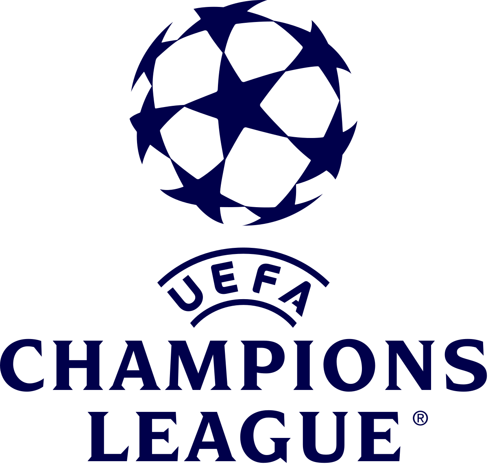

The uefa champions league
The UEFA Champions League is the most prestigious club football tournament in Europe. Organized by the UEFA, the competition brings together the top football clubs from different European countries to compete for the title of European champions. Known for its high level of competition, famous clubs, legendary players, and exciting matches, the tournament is watched by millions of fans around the world every season. The competition usually begins with group-stage matches followed by knockout rounds, leading to the grand final where the champion is crowned. Winning the UEFA Champions League is considered one of the greatest achievements in club football.